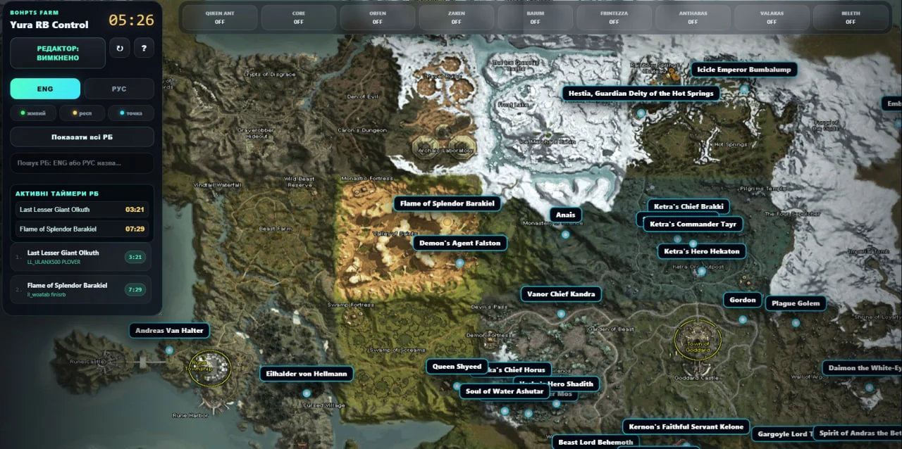

Координати РБ
Пошук Raid Boss на карті High Five з назвами, точками розташування та швидким переходом до потрібної локації.
Yura RB Monitor поєднує онлайн-карту рейд-босів, координати, пошук за назвою та активні respawn timers для Lineage 2 High Five. Дані монітора синхронізуються з картою, щоб потрібний Raid Boss був перед очима без ручних записів.

Карта рейд-босів
Один екран для пошуку боса, координат і поточного стану таймера — без окремих таблиць, секундомірів та скрінів.
Пошук Raid Boss на карті High Five з назвами, точками розташування та швидким переходом до потрібної локації.
Активні respawn timers показують, коли очікувати появу боса, без ручних секундомірів та записів.
Таймери з Yura RB Monitor синхронізуються з онлайн-картою та оновлюють актуальний стан для користувачів.
Lineage 2 High Five map
Якщо ви шукаєте карту РБ Л2, Lineage 2 High Five map, Raid Boss Map або координати рейд-босів, Yura RB Monitor об’єднує ці задачі в одному інтерфейсі.
OBS та OCR розпізнають підтримувані повідомлення системного чату, після чого монітор запускає відповідний raid boss respawn timer. Таймер відображається поверх гри та може синхронізуватися з онлайн-картою.
Поточна конфігурація орієнтована на Lineage 2 High Five і використання на BohPts x500.

Менше рутини. Більше гри.
Встанови Yura RB Monitor, налаштуй OCR один раз і працюй з картою та respawn timers в одному середовищі.